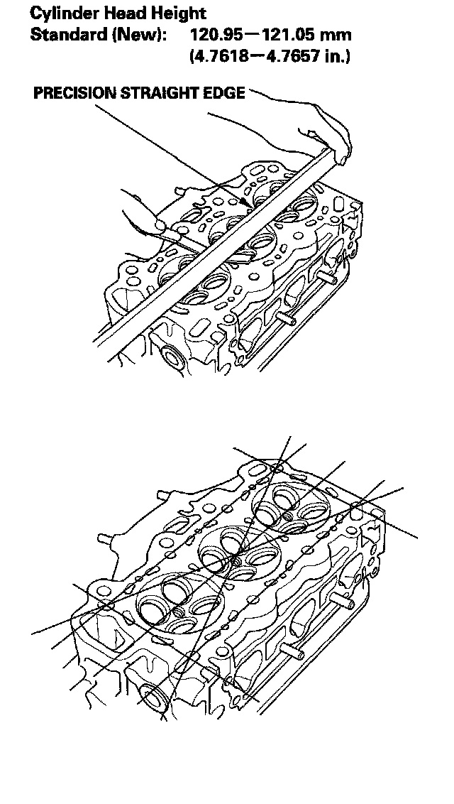

Cylinder Head Inspection For Warpage
Cylinder Head Inspection for Warpage1. Remove the cylinder head.
2. Inspect the camshaft.
3. Check the cylinder head for warpage. Measure along the edges, and three-ways across the center.
^ If warpage is less than 0.05 mm (0.002 in.), cylinder head resurfacing is not required.
^ If warpage is between 0.05 mm (0.002 in.) and 0.2 mm (0.008 in.), resurface the cylinder head.
^ Maximum resurface limit is 0.2 mm (0.008 in.) based on a height of 121 mm (4.76 in.).
